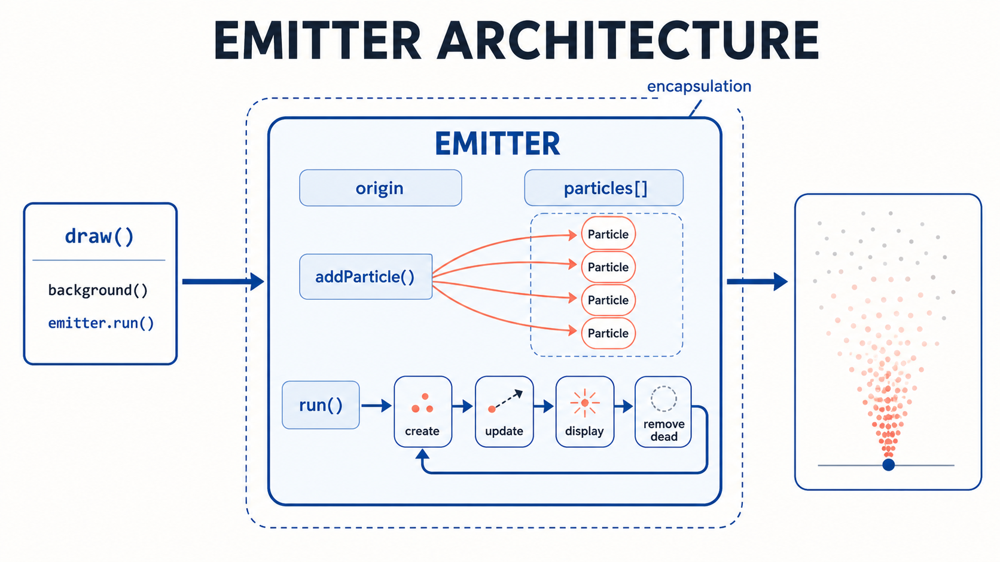
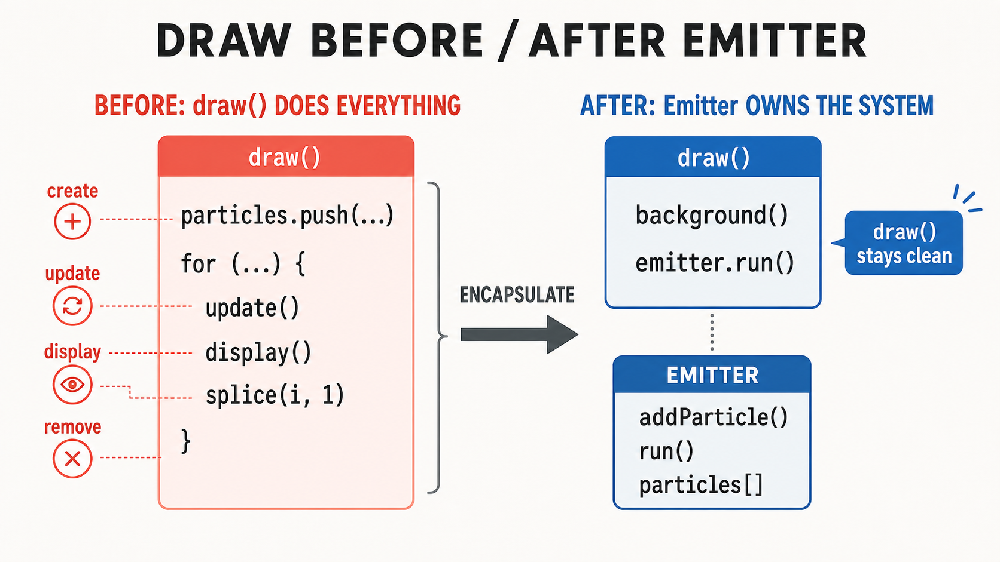
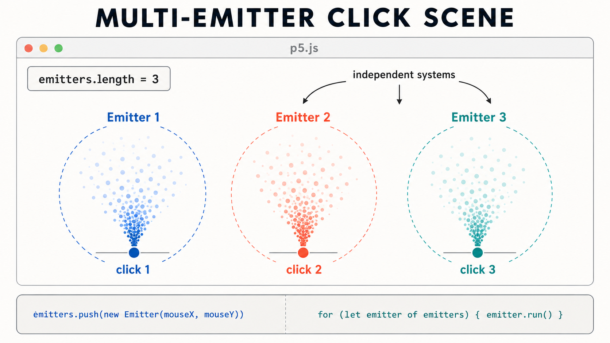
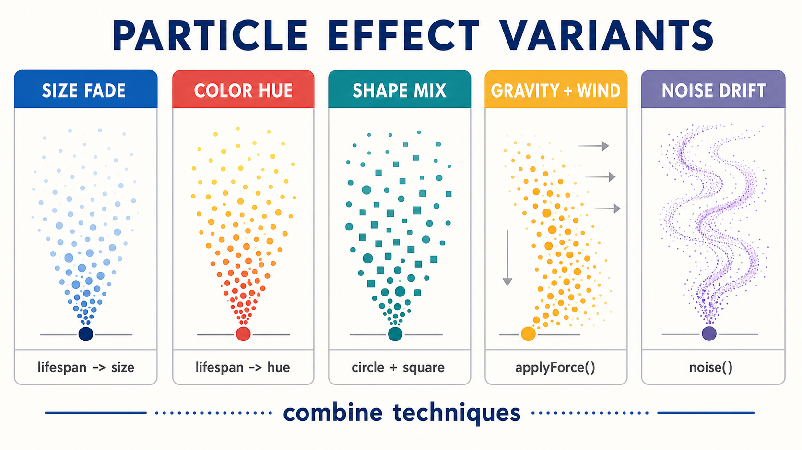
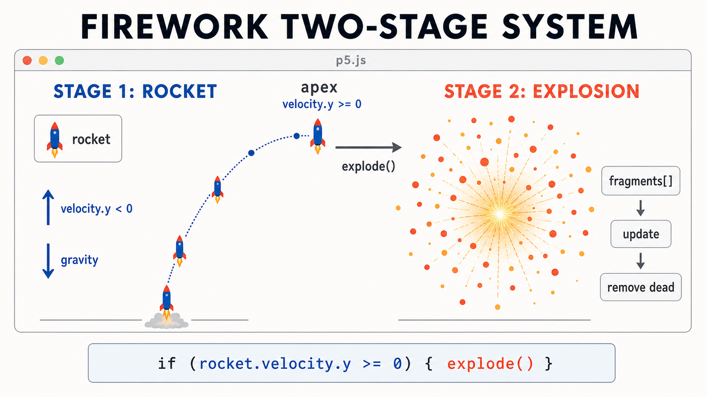
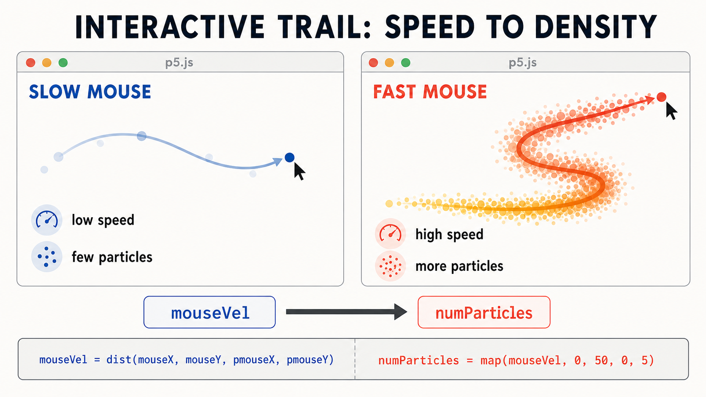

13주차 2교시 — Emitter와 파티클 이펙트
강의 아웃라인: week-13-outline 이전 교시: week-13-period1-student (파티클의 탄생과 소멸) 다음 교시: week-13-period3-student (나만의 파티클 이펙트 실습)
| 항목 | 내용 |
|---|---|
| 대상 | P5.js 입문자 (테크아트 전공, 1교시 Particle 클래스 학습 완료) |
| 소요 시간 | 45분 |
| 기반 교재 | Nature of Code — Chapter 4: Particle Systems |
- Emitter 클래스로 파티클 생성·관리를 캡슐화할 수 있습니다
- 다중 Emitter를 배열로 운영할 수 있습니다
- 크기·색상·힘·노이즈로 파티클 이펙트를 다양화할 수 있습니다
1교시 복습
1교시에서 만든 Particle 클래스는 Mover 클래스와 무엇이 달랐나요?
답: lifespan 속성이 추가되고, isDead()
메서드가 생겼습니다.
배열에서 파티클을 splice로 제거할 때, 왜 역순으로 순회해야 했나요?
답: 순방향으로 하면 splice 후 인덱스가 앞으로 밀려서 요소를 건너뛸 수 있습니다.
1교시 핵심 패턴을 코드로 다시 봅니다.
// 1교시 패턴 요약
particles.push(new Particle(x, y)); // 생성
for (let i = particles.length - 1; i >= 0; i--) { // 역순 순회
particles[i].update();
particles[i].display();
if (particles[i].isDead()) {
particles.splice(i, 1); // 소멸
}
}이 패턴이 1교시의 전부입니다. 2교시에서는 이것을 하나의 클래스 안에 간결하게 정리하는 방법을 배웁니다.
심화 개념 1 — Emitter(방출기) 클래스
1교시에서 만든 코드입니다.
// draw() 안에 파티클 관련 코드가 다 들어있음
function draw() {
background(220);
particles.push(new Particle(mouseX, mouseY));
for (let i = particles.length - 1; i >= 0; i--) {
particles[i].update();
particles[i].display();
if (particles[i].isDead()) {
particles.splice(i, 1);
}
}
}지금은 파티클 시스템이 하나뿐이라 괜찮습니다. 그런데 만약
화면에 불꽃놀이도 있고, 연기도 있고, 물보라도 있다면?
draw() 안에 비슷한 코드가 세 번 반복돼야 하고, 코드가 금방
길어집니다.
비유하자면, 파티클 하나하나가 ’개별 입자’라면 Emitter는 ‘입자 생성·관리 장치’입니다. 어디서 입자를 내보낼지 정하고, 만들고, 업데이트하고, 사라진 것을 정리합니다.
Emitter 클래스는 이런 역할을 합니다.
- 파티클을 어디서 생성할지 알고 있다
(
origin위치) - 파티클 배열을 내부에 소유한다
- 파티클의 생성 → 업데이트 → 표시 → 소멸을 한 번에 처리한다

class Emitter {
constructor(x, y) {
this.origin = createVector(x, y);
this.particles = []; // 파티클 배열을 Emitter가 소유
}
addParticle() {
this.particles.push(new Particle(this.origin.x, this.origin.y));
}
run() {
// 매 프레임 새 파티클 추가
this.addParticle();
// 역순 순회: 업데이트 + 표시 + 소멸 처리
for (let i = this.particles.length - 1; i >= 0; i--) {
this.particles[i].update();
this.particles[i].display();
if (this.particles[i].isDead()) {
this.particles.splice(i, 1);
}
}
}
}Emitter를 쓰면 draw()가 다음처럼 간결해집니다.
let emitter;
function setup() {
createCanvas(640, 360);
emitter = new Emitter(width / 2, 50);
}
function draw() {
background(220);
emitter.run();
}
draw() 안에 코드가 두 줄입니다 —
background()와 emitter.run(). 파티클
생성·업데이트·표시·소멸이 모두 Emitter 안에
캡슐화(encapsulation)되어 있습니다.
이것이 7주차에서 배운 객체지향 프로그래밍의
장점입니다. 복잡한 로직을 클래스 안에 정리하고, 바깥에서는
run() 한 번만 호출하면 됩니다.
Emitter에 마우스를 연결하는 것도 한 줄로 처리할 수 있습니다.
function draw() {
background(220);
// Emitter 위치를 마우스로 업데이트
emitter.origin.set(mouseX, mouseY);
emitter.run();
}origin.set(mouseX, mouseY) 한 줄로 마우스를 따라다니는
파티클 시스템을 만들 수 있습니다.
Emitter 클래스를 쓰면 좋은 점이 무엇일까요? 1교시 코드와 비교해서 생각해 봅니다.
답: draw()가 간결해지고, 파티클
시스템을 여러 개 만들기 쉬워집니다.
심화 개념 2 — 다중 Emitter와 확장
Emitter를 클래스로 만들었기 때문에, 여러 개의 Emitter를 동시에 운영하는 것이 아주 쉬워졌습니다.
클릭할 때마다 새 Emitter를 만드는 코드입니다.
let emitters = [];
function setup() {
createCanvas(640, 360);
}
function draw() {
background(220);
for (let emitter of emitters) {
emitter.run();
}
// 화면에 안내 텍스트
fill(0);
noStroke();
text("화면을 클릭하면 파티클 방출 효과가 생겨요!", 10, 20);
text("Emitter 수: " + emitters.length, 10, 40);
}
function mousePressed() {
emitters.push(new Emitter(mouseX, mouseY));
}
클릭할 때마다 새로운 파티클 방출 효과가 생깁니다. 각 Emitter가 독립적으로 자기 파티클들을 관리하므로, 서로 간섭하지 않습니다.
Emitter마다 다른 색상을 줘서 개성을 부여할 수도 있습니다. Particle에 색상 파라미터를 추가하면 됩니다.
class Particle {
constructor(x, y, col) {
this.position = createVector(x, y);
this.velocity = createVector(random(-1, 1), random(-2, 0));
this.acceleration = createVector(0, 0.05);
this.lifespan = 255;
this.col = col; // 색상 저장
}
update() {
this.velocity.add(this.acceleration);
this.position.add(this.velocity);
this.lifespan -= 2;
}
display() {
noStroke();
fill(red(this.col), green(this.col), blue(this.col), this.lifespan);
ellipse(this.position.x, this.position.y, 12);
}
isDead() {
return this.lifespan < 0;
}
}
class Emitter {
constructor(x, y) {
this.origin = createVector(x, y);
this.particles = [];
// 랜덤 색상 지정
this.col = color(random(255), random(255), random(255));
}
addParticle() {
this.particles.push(new Particle(this.origin.x, this.origin.y, this.col));
}
run() {
this.addParticle();
for (let i = this.particles.length - 1; i >= 0; i--) {
this.particles[i].update();
this.particles[i].display();
if (this.particles[i].isDead()) {
this.particles.splice(i, 1);
}
}
}
}이제 클릭할 때마다 다른 색상의 파티클 방출 효과가 만들어집니다.
심화 개념 3 — 다양한 파티클 이펙트 기법
기본 구조를 배웠으니, 시각적으로 다양한 이펙트를 만드는 다섯 가지 기법을 살펴봅니다. 3교시 실습에서 자유롭게 골라 조합할 수 있습니다.

1. 크기 변화 — lifespan에 따라 파티클 크기도 변화
display() {
noStroke();
fill(127, this.lifespan);
// lifespan이 줄면 크기도 줄어듦
let size = map(this.lifespan, 0, 255, 0, 16);
ellipse(this.position.x, this.position.y, size);
}map()으로 lifespan(0~255)을 크기(0~16)로 매핑합니다.
파티클이 사라지면서 작아지는 효과입니다.
2. 색상 변화 — HSB 모드로 불꽃 효과
function setup() {
createCanvas(640, 360);
colorMode(HSB, 255); // HSB 모드 활성화
}Particle 클래스 안의 display()는 아래처럼
교체합니다.
display() {
noStroke();
// lifespan에 따라 색상 변화: 노랑(40) → 빨강(0)
let hue = map(this.lifespan, 0, 255, 0, 40);
fill(hue, 255, 255, this.lifespan);
ellipse(this.position.x, this.position.y, 12);
}HSB 모드에서 Hue를 lifespan에 연결하면, 노랑에서 빨강으로 변하면서 사라지는 불꽃 효과가 됩니다.
colorMode(HSB, 255)를 켜면
background()·text()의 색상도 HSB 기준으로
바뀝니다. 다른 색상 코드도 함께 점검하세요.
3. 다양한 형태 — 원, 사각형 혼합
display() {
stroke(0, this.lifespan);
fill(127, this.lifespan);
// 형태는 constructor에서 미리 정해둠 (this.shape)
if (this.shape === 0) {
ellipse(this.position.x, this.position.y, 12);
} else {
rectMode(CENTER);
rect(this.position.x, this.position.y, 10, 10);
}
}4. 힘 적용 — 10주차 applyForce() 패턴 재활용
// Particle 클래스에 추가
applyForce(force) {
this.acceleration.add(force);
}
// update()에서 가속도 리셋 추가
update() {
this.velocity.add(this.acceleration);
this.position.add(this.velocity);
this.acceleration.mult(0); // 매 프레임 가속도 리셋
this.lifespan -= 2;
}Emitter의 run() 안에서 힘을 적용하면 구조가
간결합니다.
run() {
this.addParticle();
let gravity = createVector(0, 0.05);
let wind = createVector(0.03, 0);
for (let i = this.particles.length - 1; i >= 0; i--) {
this.particles[i].applyForce(gravity);
this.particles[i].applyForce(wind);
this.particles[i].update();
this.particles[i].display();
if (this.particles[i].isDead()) {
this.particles.splice(i, 1);
}
}
}10주차의 applyForce() 패턴이 그대로 쓰입니다. 바람,
중력, 반발력 등 어떤 힘이든 적용할 수 있습니다.
acceleration.mult(0)로 가속도를 매 프레임 리셋하는 점도
함께 기억하세요.
5. 노이즈 활용 — 12주차 Perlin Noise로 유기적 움직임
update() {
// Perlin Noise로 유기적 힘 생성
let nx = map(noise(this.position.x * 0.01, this.position.y * 0.01, frameCount * 0.01), 0, 1, -0.1, 0.1);
let ny = map(noise(this.position.x * 0.01 + 1000, this.position.y * 0.01 + 1000, frameCount * 0.01), 0, 1, -0.1, 0.1);
this.acceleration.add(createVector(nx, ny));
this.velocity.add(this.acceleration);
this.position.add(this.velocity);
this.acceleration.mult(0);
this.lifespan -= 2;
}12주차의 노이즈가 여기서 다시 등장합니다. 파티클이 연기나 물결처럼 유기적으로 움직입니다.
다음 주차 예고: 이미지 파티클(ellipse
대신 작은 이미지 사용)과 사운드에 반응하는 파티클은 14주차 미디어·사운드
수업에서 이어집니다. 오늘의 파티클 시스템이 14주차 사운드와 만나면
음악에 반응하는 비주얼이 됩니다.
응용 사례
사례 1 — 불꽃놀이(Firework): 2단계 파티클 시스템
불꽃놀이는 “2단계”로 동작합니다.
- 발사체(Rocket): 위로 올라가는 파티클 하나
- 폭발(Explosion): 발사체가 정점에 도달하면 수십 개의 파티클로 분열

이 불꽃놀이 코드는 앞서 본 applyForce() 패턴을 사용한
버전입니다. 전체 코드보다 핵심 구조를 봅니다.
class Firework {
constructor() {
// 1단계: 발사체 — 아래에서 위로
this.rocket = new Particle(random(width), height);
this.rocket.velocity = createVector(random(-2, 2), random(-12, -8));
this.exploded = false;
this.fragments = [];
}
update() {
if (!this.exploded) {
this.rocket.applyForce(createVector(0, 0.2)); // 중력
this.rocket.update();
// 속도가 0에 가까워지면 (정점) → 폭발!
if (this.rocket.velocity.y >= 0) {
this.explode();
}
}
// 2단계: 파편 업데이트
for (let i = this.fragments.length - 1; i >= 0; i--) {
this.fragments[i].applyForce(createVector(0, 0.05));
this.fragments[i].update();
if (this.fragments[i].isDead()) {
this.fragments.splice(i, 1);
}
}
}
explode() {
this.exploded = true;
for (let i = 0; i < 30; i++) {
let fragment = new Particle(
this.rocket.position.x,
this.rocket.position.y
);
// p5.Vector.random2D() → 모든 방향의 단위 벡터!
fragment.velocity = p5.Vector.random2D().mult(random(2, 6));
this.fragments.push(fragment);
}
}
isDone() {
return this.exploded && this.fragments.length === 0;
}
}핵심 포인트입니다.
Firework자체가 하나의 “미니 파티클 시스템”입니다- 발사체의
velocity.y >= 0(위로 가는 힘이 다함) → 폭발 트리거 p5.Vector.random2D()로 모든 방향의 단위 벡터를 만들고,mult()로 랜덤 크기를 곱합니다- “기존 파티클이 조건에 도달하면 새 파티클 묶음을 만든다” — 이 아이디어가 복잡한 이펙트의 기본입니다
background(0, 25)— 배경을 완전히 지우는 대신 반투명하게 덮어 잔상 효과를 만들 수 있습니다
전체 실행 코드는 3교시의 선택 확장 과제 “불꽃놀이” 섹션에 있습니다. 더 해보고 싶다면 도전해 볼 수 있습니다.
사례 2 — 인터랙티브 트레일 (마우스 잔상)
마우스 속도에 비례해서 파티클 생성량을 조절하면, 빠르게 움직일 때 더 많은 잔상이 생깁니다. 아래는 Emitter 없이 배열을 직접 다루는 1교시 패턴으로 작성한 예제입니다.
let particles = [];
function setup() {
createCanvas(640, 360);
}
function draw() {
background(0, 30); // 잔상 효과
// 마우스 속도 계산 (pmouseX, pmouseY는 이전 프레임의 마우스 위치)
let mouseVel = dist(mouseX, mouseY, pmouseX, pmouseY);
// 마우스 속도에 비례한 파티클 수 생성
let numParticles = floor(map(mouseVel, 0, 50, 0, 5));
for (let i = 0; i < numParticles; i++) {
particles.push(new Particle(mouseX, mouseY));
}
// 역순 순회로 업데이트 + 표시 + 소멸
for (let i = particles.length - 1; i >= 0; i--) {
particles[i].update();
particles[i].display();
if (particles[i].isDead()) {
particles.splice(i, 1);
}
}
}
마우스를 빠르게 움직이면 잔상이 길게 남고, 천천히 움직이면 거의 남지 않습니다. 움직임의 에너지가 시각적으로 표현되는 것입니다.
pmouseX, pmouseY는 p5.js가 자동으로
제공하는 “이전 프레임의 마우스 좌표”입니다. dist()로 현재와
이전 위치의 거리를 재면 마우스 속도를 알 수 있습니다.
사례 3 — 기말 프로젝트 연결 아이디어
기말 프로젝트에서 파티클 시스템을 활용할 수 있는 방향입니다.
- 사운드 반응 파티클 (14주차 사운드와 연결)
- 음악의 볼륨에 따라 파티클 생성량 조절
- 주파수 대역별로 다른 색상·크기의 파티클
- “음악이 보이는” 인터랙티브 비주얼
- 데이터 기반 파티클 (11주차 외부 데이터와 연결)
- CSV 데이터의 수치를 파티클 속성에 매핑
- 데이터가 파티클로 시각화되는 작품
- 인터랙티브 설치 (마우스/키보드 → 웹캠으로 확장)
- 14주차
createCapture()와 결합 - 사람의 움직임에 반응하는 파티클 시스템
- 14주차
다음 주에 사운드를 배우면, 오늘의 파티클과 합쳐서 멋진 작품을 만들 수 있습니다.
3교시 실습 안내
3교시에는 오늘 배운 Particle·Emitter를 직접 다뤄보고, 자신만의 시각 효과를 만듭니다. 제출하는 과제는 아니고 수업 시간 안에서 직접 해보는 실습이며, 결과물은 기말 프로젝트의 시각 모듈로 그대로 재활용할 수 있습니다.
필수로 해볼 것 - 스타터 코드의 Particle 동작 확인 - Emitter 클래스 직접 구현 - 마우스 또는 키보드 인터랙션 1개
확장으로 도전할 것 (원하는 만큼) - 다중 Emitter (클릭으로 생성) - 색상·크기·형태 변화 - 힘(중력/바람) 적용, 노이즈 활용 - 불꽃놀이 등 2단계 시스템
핸드아웃의 스타터 코드를 먼저 실행해 Particle이 어떻게 도는지 확인하고, 거기서부터 한 겹씩 쌓아 나가면 됩니다.